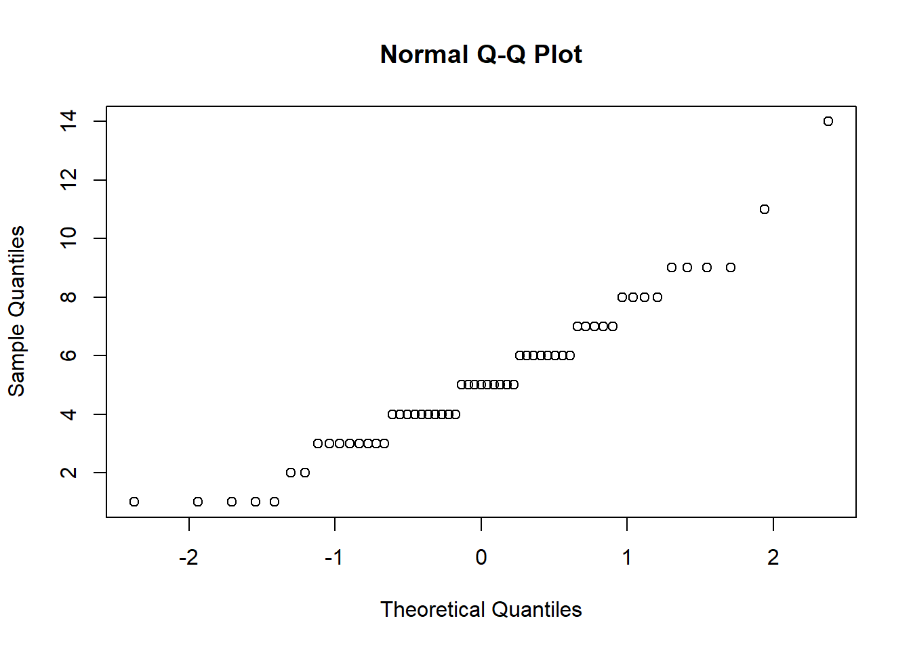
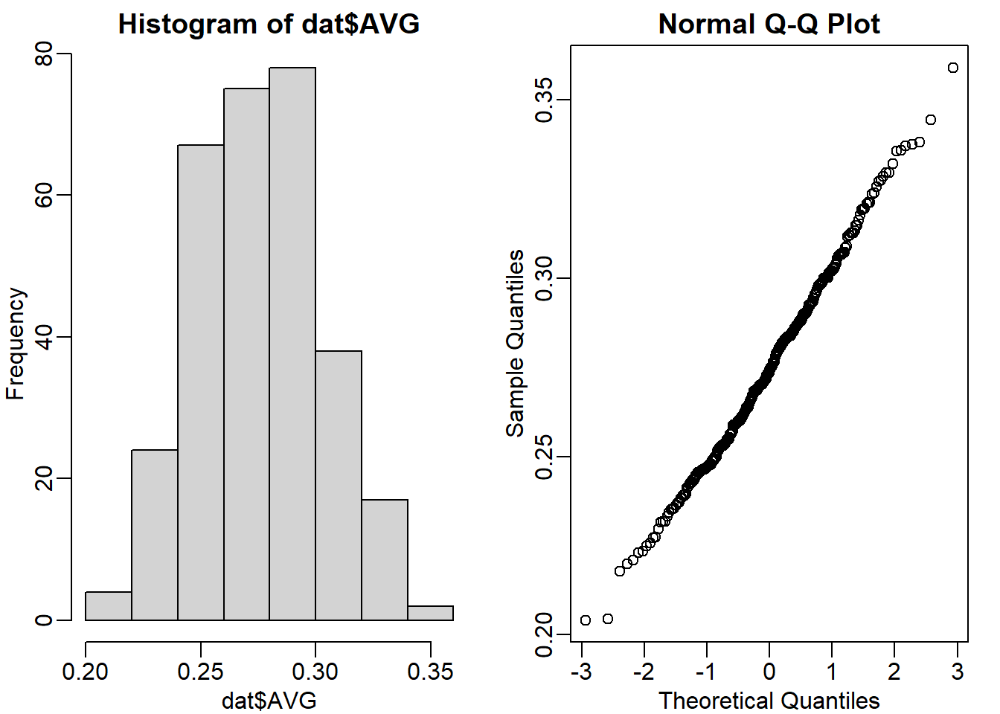
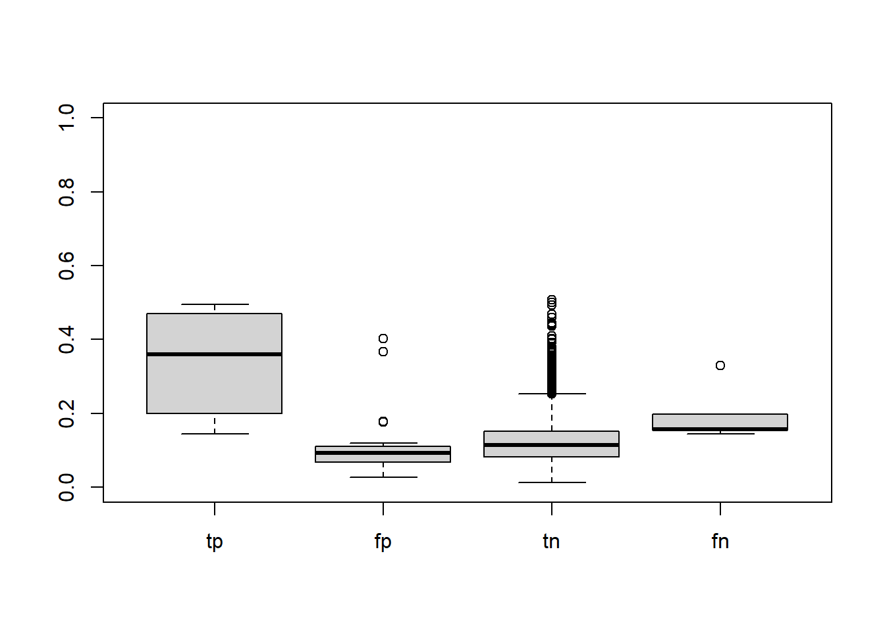

Chapter 7 Statistical Models
Note: I have rephrased some parts of the questions for clarity. These changes are bolded. Due to the random numbers, the exact values of the answers, despite the same seeds, might differ. So please be mindful of that.
First, upload necessary package(s).
library(dplyr) # uplaods the functions filter() and %>%
library(rafalib) # important for plotting with base R
library(limma)7.5 Exercises
Question 1
The probability of conceiving a girl is 0.49. What is the probability that a family with 4 children has 2 girls and 2 boys (you can assume that the outcomes are independent)?
p <- 0.49
dbinom(2,4,p=p)## [1] 0.3747001dbinom and pbinom are different. pbinom is cumulative, whereas dibnom is for individual value. Here is a demonstration. They are all equal.
p <- 0.49
dbinom(2,4,p=p)## [1] 0.3747001pbinom(2,4,p=p)## [1] 0.702348dbinom(0,4,p=p) + dbinom(1,4,p=p) + dbinom(2,4,p=p)## [1] 0.702348Question 2
What is the probability that a family with 10 children has 6 girls and 4 boys (assume no twins)?
p <- 0.49
dbinom(6,10,p=p)## [1] 0.1966421Question 3
The genome has 3 billion bases. About 20% are C, 20% are G, 30% are T, and 30% are A. Suppose you take a random interval of 20 bases, what is the probability that the GC-content (proportion of Gs of Cs) is strictly above 0.5 in this interval?
p <- 0.4
pbinom(20,20,p) - pbinom(10,20,p)## [1] 0.1275212Question 4
The probability of winning the lottery is 1 in 175,223,510. If 20,000,000 people buy a ticket, what is the probability that more than one person wins?
p <- 1/175233510
N <- 20000000
1 - ppois(1,N*p)## [1] 0.0060382151 - pbinom(1,N,p)## [1] 0.006038215Since the poisson distrubtion is a type of binomial distribution, both distribution give the same values.
Question 5
The genome has 3 billion bases. About 20% are C, 20% are G, 30% are T, and 30% are A. Suppose you take a random interval of 20 bases, what is the exact probability that the GC-content (proportion of Gs of Cs) is greater than 0.35 and smaller or equal to 0.45 in this interval?
p <- 0.4
pbinom(0.45*20, 20, p) - pbinom(0.35*20,20,p)## [1] 0.3394443Question 6
For the question above, what is the normal approximation to the probability?
p <- 0.4
N <- 20
a <- (0.45*20 - N*p) / sqrt(N*p*(1-p))
b <- (0.35*20 - N*p) / sqrt(N*p*(1-p))
approx <- pnorm(a) - pnorm(b)
approx## [1] 0.3519231Question 7
Repeat Question 5, but using an interval of 1000 bases. What is the difference (in absolute value) between the normal approximation and the exact distribution of the GC-content being greater than 0.35 and lesser or equal to 0.45?
N <- 1000
p <- 0.4
a <- (0.45*N - N*p) / sqrt(N*p*(1-p))
b <- (0.35*N - N*p) / sqrt(N*p*(1-p))
approx <- pnorm(a) - pnorm(b)
exact <- pbinom(0.45*N,N,p) - pbinom(0.35*N,N,p)
exact - approx## [1] 9.728752e-06Question 8
The Cs in our genomes can be methylated or unmethylated. Suppose we have a large (millions) group of cells in which a proportion p of the Cs of interest are methylated. We break up the DNA of these cells and randomly select pieces and end up with \(N\) pieces that contain the C we care about. This means that the probability of seeing \(k\) methylated Cs is binomial:
exact = dbinom(k,N,p)We can approximate this with the normal distribution:
a <- (k+0.5 - N*p)/sqrt(N*p*(1-p))
b <- (k-0.5 - N*p)/sqrt(N*p*(1-p))
approx = pnorm(a) - pnorm(b)Compute the difference approx-exact for:
N <- c(5,10,50,100,500)
p <- seq(0,1,0.25)Compare the approximation and exact probability of the proportion of Cs being \(p\), \(k = 1,...,N-1\) plotting the exact versus the approximation for each \(p\) and \(N\) combination. Which statement is false?
Ns <- c(5,10,50,100,500)
Ps <- seq(0,1,0.25)
mypar(5,5)
for (i in seq_along(Ns)) {
n <- Ns[[i]]
k <- seq(1:n-1)
for (j in seq_along(Ps)) {
p <- Ps[[j]]
exact = dbinom(k, n, p)
a = (k+0.5- n*p)/sqrt(n*p*(1-p))
b = (k-0.5- n*p)/sqrt(n*p*(1-p))
approx = pnorm(a) - pnorm(b)
qqplot(exact,approx,xlab='exact',ylab='approx',
main = paste0('N=',n,' ','p=',p))
abline(0,1)
}
}
The answer is C: When N is 100 all approximations are spot on. When p is close to 0 or 1, the normal distribution breaks down even at N = 100.
Question 9
We saw in the previous question that when p is very small, the normal approximation breaks down. If N is very large, then we can use the Poisson approximation.
Earlier we computed 1 or more people winning the lottery when the probability of winning was 1 in 175,223,510 and 20,000,000 people bought a ticket. Using the binomial, we can compute the probability of exactly two people winning to be:
N <- 20000000
p <- 1/175223510
dbinom(2,N,p)## [1] 0.005811321If we were to use the normal approximation, we would greatly underestimate this:
a <- (2+0.5 - N*p)/sqrt(N*p*(1-p))
b <- (2-0.5 - N*p)/sqrt(N*p*(1-p))
pnorm(a) - pnorm(b)## [1] 2.04756e-05To use the Poisson approximation here, use the rate \(\lambda = Np\) representing the number of people per 20,000,000 that win the lottery. Note how much better the approximation is:
dpois(2,N*p)## [1] 0.005811321In this case, it is practically the same because N is very large and Np is not 0. These are the assumptions needed for the Poisson to work. What is the Poisson approximation for more than one person winning?
1 - ppois(1,N*p)## [1] 0.006038879Question 10
Write a function that takes \(\lambda\) and the vector of counts as input and returns the log-likelihood. Compute this log-likelihood for lambdas = seq(0,15,len=300) and make
a plot. What value of lambdas maximizes the log-likelihood?
library(dagdata)data(hcmv)
mypar()
plot(locations,rep(1,length(locations)),ylab="",yaxt="n")breaks=seq(0,4000*round(max(locations)/4000),4000)
tmp=cut(locations,breaks)
counts=as.numeric(table(tmp))
hist(counts)probs <- dpois(counts,4)
likelihood <- prod(probs)
likelihood## [1] 1.177527e-62logprobs <- dpois(counts,4,log=T)
loglikelihood <- sum(logprobs)
loglikelihood## [1] -142.5969loglike = function(lambdas) {
logprobs <- dpois(counts,lambdas,log=T)
loglikelihood <- sum(logprobs)
return(loglikelihood)
}
lambdas <- seq(0,15,len=300)
log_res <- exp(sapply(lambdas,loglike))
optim_lambda <- lambdas[which(log_res == max(log_res))]Question 11
The point of collecting this dataset was to try to determine if there is a region of the genome that has a higher palindrome rate than expected. We can create a plot and see the counts per location:
library(dagdata)
data(hcmv)
breaks=seq(0,4000*round(max(locations)/4000),4000)
tmp=cut(locations,breaks)
counts=as.numeric(table(tmp))
binLocation=(breaks[-1]+breaks[-length(breaks)])/2
plot(binLocation,counts,type="l",xlab=)
What is the center of the bin with the highest count?
binLocation[which(counts == max(counts))]## [1] 94000Question 12
What is the maximum count?
max(counts)## [1] 14Question 13
Once we have identified the location with the largest palindrome count, we want to know if we could see a value this big by chance. If X is a Poisson random variable with rate:
lambda = mean(counts[-which.max(counts)])What is the probability of seeing a count of 14 or more?
1 - ppois(13, lambda)## [1] 0.00069799You subtract ppois(13,optim_lambda) because you need to exclude it. Since this distribution is discrete, 1 - ppois(13, optim_lambda) will count probability from a seeing a count of 14 or more.
Question 14
So we obtain a p-value smaller than 0.001 for a count of 14. Why is it problematic to report this p-value as strong evidence of a location that is different?
The answer is B: We selected the highest region out of 57 and need to adjust for multiple testing. Answer A is wrong because we do use normal approximation in t-test to get a p-value, so there is nothing wrong with using approximation. Answer B is correct because the p-value that we obtained is from a comparison against the sample mean (z score = 0) rather than all other counts. Therefore, the p-value must be corrected (ex. Bonferronis procedure). Answer C is wrong because p value can also be a random variable, but this answer choice implies that p-value is not a random variable. Answer D is wrong because effect size is irrelevent.
Question 15
Use the Bonferroni correction to determine the p-value cut-off that guarantees a FWER of 0.05. What is this p-value cutoff?
0.05/length(counts)## [1] 0.000877193Question 16
Create a qq-plot to see if our Poisson model is a good fit:
ps <- (seq(along=counts) - 0.5)/length(counts)
lambda <- mean( counts[ -which.max(counts)])
poisq <- qpois(ps,lambda)
plot(poisq,sort(counts))
abline(0,1)How would you characterize this qq-plot - A) Poisson is a terrible approximation. - B) Poisson is a very good approximation except for one point that we actually think is a region of interest. - C) There are too many 1s in the data. - D) A normal distribution provides a better approximation.
The answer is B. You can check whether the palindrome counts are well approximated by the normal distribution.
qqnorm(sort(counts))
Question 17
Load the tissuesGeneExpression data library:
library(tissuesGeneExpression)
data("tissuesGeneExpression")Then select the columns related to endometrium:
library(genefilter)
y = e[,which(tissue=="endometrium")]This will give you a matrix y with 15 samples. Compute the across sample variance for the first three samples. Then make a qq-plot to see if the data follow a normal distribution. Which of the following is true? - A) With the exception of a handful of outliers, the data follow a normal distribution. - B) The variance does not follow a normal distribution, but taking the square root fixes this. - C) The normal distribution is not usable here: the left tail is over estimated and the right tail is underestimated. - D) The normal distribution fits the data almost perfectly.
vars <- rowVars(y[,1:3])
length(vars)## [1] 22215mypar(1,2)
qqnorm(sqrt(vars)) # choice B is false
qqnorm(vars) # choice A and D are false
The answer is C.
Question 18
Now fit an F-distribution with 14 degrees of freedom using the fitFDist function in the limma package. What are df2 and scale ?
libraryres <- fitFDist(vars,14)
res## $scale
## [1] 0.01139807
##
## $df2
## [1] 1.217793Question 19
Now create a qq-plot of the observed sample variances versus the F-distribution quantiles. Which of the following best describes the qq-plot?
pf <- (seq(along=vars)-0.5)/length(vars)
theory <- qf(pf,14,res$df2) # theoretical quantiles from F distribution
mypar(1,2)
qqplot(theory, sort(vars), xlab = 'theory', ylab ='obs') # F approximation vs variance from the data
qqnorm(sort(vars)) # normal approximation vs variance from the data
The answer is D: If we exclude the highest 0.1% of the data, the F-distribution provides a good fit. Actually I do not think answer is entirely correct but this is the most appropriate one. Even if we exclude the top 0.1% there are still more outliers to remove. Here is a demonstration.
vars_sort <- sort(vars)
vars_excl <- vars_sort[1:18000] # 18000 out of 22215 kept = 81%
pf_excl <- (seq(along=vars_excl)-0.5)/length(vars_excl)
theory <- qf(pf_excl,14,res$df2)
mypar(2,2)
qqplot(theory,vars_excl, xlab = 'theory',ylab='obs',
main = 'all data compared with F-approximation')
qqplot(vars_excl,theory, xlim = c(0,0.2),
ylim = c(0,100), main = 'zoomed in')
qqnorm(vars_excl, main = 'normal qqplot') # comparing with normal approximation with filtered variance (81% kept)Even if I keep up to 81% of the values, F-distribution ## 7.7 Exercises {-}
Question 1
A test for cystic fibrosis has an accuracy of 99%. Specifically, we mean that: \[ \begin{align*} Prob(+|D) = 0.99, Prob(-|no D) = 0.99 \end{align*} \] The cystic fibrosis rate in the general population is 1 in 3,900, Prob(D) = 0:00025. If we select a random person and they test positive, what is probability that they have cystic fibrosis \(Prob(D|+)\) ? Hint: use Bayes Rule.
(0.99*0.00025)/(0.99*0.00025 + 0.01*(1-0.00025))## [1] 0.02415813Question 2
First download some baseball statistics.
tmpfile <- tempfile()
tmpdir <- tempdir()
download.file("http://seanlahman.com/files/database/lahman-csv_2014-02-14.zip",tmpfile)
##this shows us files
filenames <- unzip(tmpfile,list=TRUE)
players <- read.csv(unzip(tmpfile,files="Batting.csv",exdir=tmpdir),as.is=TRUE)
unlink(tmpdir)
file.remove(tmpfile)## [1] TRUEWe will use the dplyr, which you can read about here to obtain data from 2010, 2011, and 2012, with more than 500 at bats (AB >= 500).
dat <- filter(players,yearID>=2010, yearID <=2012) %>% mutate(AVG=H/AB) %>% filter(AB>500)What is the average of these batting averages?
mean(dat$AVG,na.rm=T)## [1] 0.2753465Question 3
What is the standard deviation of these batting averages?
sd(dat$AVG,na.rm=T)## [1] 0.02741713Question 4
Use exploratory data analysis to decide which of the following distributions approximates our AVG:
mypar(1,2)
hist(dat$AVG)
qqnorm(dat$AVG)
The answer is A: Normal.
Question 5
It is April and after 20 at bats, Jos Iglesias is batting .450 (which is very good). We can think of this as a binomial distribution with 20 trials, with probability of success p.Our sample estimate of p is .450. What is our estimate of standard deviation? Hint: This is the sum that is binomial divided by 20.
p <- 0.45
n <- 20
sqrt(p*(1-p)/n)## [1] 0.111243Question 6
The Binomial is approximated by normal, so our sampling distribution is approximately normal with mean \(Y\) = 0.45 and SD \(\sigma\) = 0.11. Earlier we used a baseball database to determine that our prior distribution is Normal with mean \(\mu\) = 0.275 and SD \(\tau\) = 0.027. We also saw that this is the posterior mean prediction of the batting average.
What is your Bayes prediction for the batting average going forward?
B <- (0.11^2)/(0.11^2 + 0.027^2)
post_u <- 0.275*B + (1-B)*0.45
post_u## [1] 0.28494437.9 Exericses
library(Biobase)
library(SpikeInSubset)data(rma95)
y <- exprs(rma95)
pData(rma95)## 37777_at 684_at 1597_at 38734_at 39058_at 36311_at
## 1521a99hpp_av06 0.00 0.25 0.5 1 2 4
## 1532a99hpp_av04 0.00 0.25 0.5 1 2 4
## 2353a99hpp_av08 0.00 0.25 0.5 1 2 4
## 1521b99hpp_av06 0.25 0.50 1.0 2 4 8
## 1532b99hpp_av04 0.25 0.50 1.0 2 4 8
## 2353b99hpp_av08r 0.25 0.50 1.0 2 4 8
## 36889_at 1024_at 36202_at 36085_at 40322_at 407_at
## 1521a99hpp_av06 8 16 32 64 128 0.00
## 1532a99hpp_av04 8 16 32 64 128 0.00
## 2353a99hpp_av08 8 16 32 64 128 0.00
## 1521b99hpp_av06 16 32 64 128 256 0.25
## 1532b99hpp_av04 16 32 64 128 256 0.25
## 2353b99hpp_av08r 16 32 64 128 256 0.25
## 1091_at 1708_at 33818_at 546_at
## 1521a99hpp_av06 512 1024 256 32
## 1532a99hpp_av04 512 1024 256 32
## 2353a99hpp_av08 512 1024 256 32
## 1521b99hpp_av06 1024 0 512 64
## 1532b99hpp_av04 1024 0 512 64
## 2353b99hpp_av08r 1024 0 512 64g <- factor(rep(0:1,each=3))
spike <- rownames(y) %in% colnames(pData(rma95))Question 1
Only these 16 genes are diferentially expressed since the six samples differ only due to sampling (they all come from the same background pool of RNA). Perform a t-test on each gene using the rowttest function.
What proportion of genes with a p-value < 0.01 (no multiple comparison correction) are not part of the artifcially added (false positive)?
pval <- rowttests(y,g)$p.value
head(pval < 0.01)## [1] FALSE FALSE FALSE FALSE FALSE FALSEnrow(y[spike,])## [1] 16sum(pval[spike] < 0.01) # 11## [1] 11(nrow(y[pval < 0.01,]) - sum(pval[spike] < 0.01))/ nrow(y[pval < 0.01,])## [1] 0.7608696Question 2
Now compute the within group sample standard deviation for each gene (you can use group 1). Based on the p-value cut-off, split the genes into true positives, false positives, true negatives and false negatives. Create a boxplot comparing the sample SDs for each group. Which of the following best describes the boxplot?
calls <- pval < 0.01 # calls for significance
sds_y <- rowSds(y) # std for each gene
fp <- sds_y[calls & !spike] # false positive
fn <- sds_y[!calls & spike] # false negative
tn <- sds_y[!spike] # true negative
tp <- sds_y[spike] # true positive
res <- list(tp,fp,tn,fn)
names(res) <- c('tp','fp','tn','fn')
boxplot(res, ylim = c(0,1))
The answer is D: The false positives have smaller standard deviation.
Question 3
In the previous two questions, we observed results consistent with the fact that the random variability associated with the sample standard deviation leads to t-statistics that are large by chance.
The sample standard deviation we use in the t-test is an estimate and with just a pair of triplicate samples, the variability associated with the denominator in the t-test can be large.
The following steps perform the basic limma analysis. We specify coef=2 because we are interested in the difference between groups, not the intercept. The eBayes step uses a
hierarchical model that provides a new estimate of the gene specific standard error.
library(limma)
fit <- lmFit(y, design=model.matrix(~ g))
colnames(coef(fit))## [1] "(Intercept)" "g1"fit <- eBayes(fit)Here is a plot of the original, new, hierarchical models based estimate versus the sample based estimate:
sampleSD = fit$sigma
posteriorSD = sqrt(fit$s2.post)Which best describes what the hierarchical model does?
hist(sampleSD, xlim = c(0,.5))
hist(posteriorSD, xlim = c(0,.5))mean(sampleSD)## [1] 0.1241865The answer choice is A: Moves all esimates of standard deviation closer to 0.12.
Question 4
Use these new estimates of standard deviation in the denominator of the t-test and compute p-values. You can do it like this:
library(limma)
fit = lmFit(y, design=model.matrix(~ g))
fit = eBayes(fit)
##second coefficient relates to diffences between group
pvals = fit$p.value[,2]What proportion of genes with a p-value < 0.01 (no multiple comparison correction) are not part of the artificially added (false positive)?
pvals <- fit$p.value[,2]
(nrow(y[pvals < 0.01,]) - sum(pvals[spike] < 0.01))/ nrow(y[pvals < 0.01,])## [1] 0.6486486